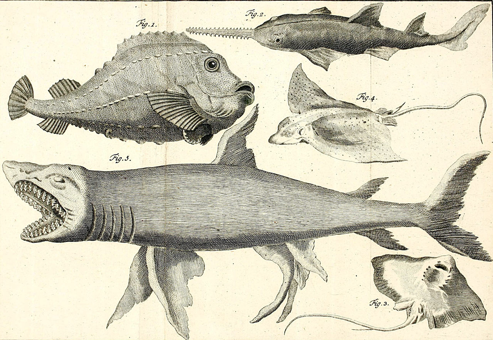
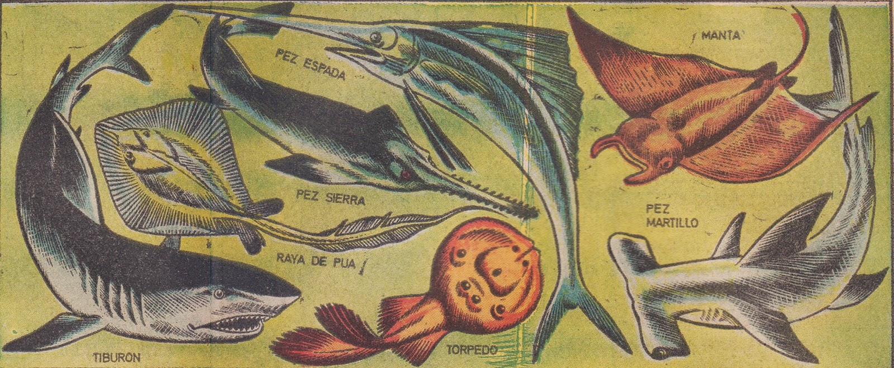
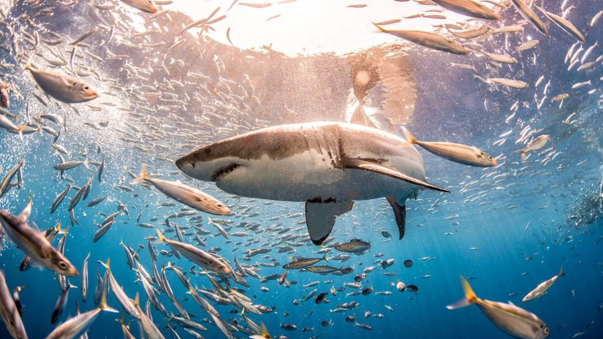
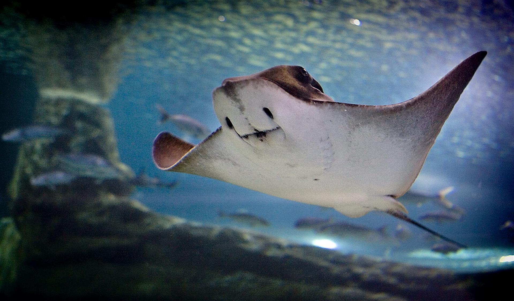

¿Qué son?
Los seláceos (Selachii) son una subclase de peces cartilaginosos, dentro de la clase Chondrichthyes, que incluye a los tiburones y las rayas. Se caracterizan por tener un esqueleto cartilaginoso en lugar de óseo, como es el caso de los peces óseos (Osteichthyes). Los seláceos son conocidos por sus adaptaciones a la vida marina y su importancia en los ecosistemas marinos.

Características
Esqueleto Cartilaginoso: A diferencia de los peces óseos, los seláceos tienen un esqueleto hecho de cartílago, lo que los hace más ligeros y flexibles.
Escamas: Tienen escamas dérmicas llamadas dentículos dérmicos que les proporcionan una textura áspera y ayudan a reducir la fricción en el agua.
Sistema de Órganos Sensoriales: Poseen un sistema de órganos sensoriales muy desarrollado, como la línea lateral, que les permite detectar vibraciones y movimientos en el agua. También tienen ampollas de Lorenzini, que les permiten detectar campos eléctricos.
Dentición: Sus dientes están dispuestos en varias filas y se reemplazan continuamente a lo largo de su vida. La forma de los dientes varía según la dieta del animal.
Reproducción: La mayoría de los seláceos tienen una reproducción interna. Los métodos incluyen la ovoviviparidad (donde los huevos se desarrollan dentro del cuerpo de la madre y los crías nacen vivas) y la viviparidad (donde hay una conexión placentaria entre la madre y los embriones).
Respiración: La mayoría de los tiburones deben nadar constantemente para forzar el flujo de agua sobre sus branquias para respirar, aunque algunas especies pueden bombear agua activamente sobre ellas.

Clasificacion
Tiburones (Selachimorpha):

Tiburón Blanco (Carcharodon carcharias): Conocido por su tamaño y su papel en la cultura popular. Es un depredador apex.
Tiburón Toro (Carcharhinus leucas):Conocido por su adaptabilidad a diferentes hábitats, incluyendo aguas dulces.
Tiburón Ballena (Rhincodon typus):El tiburón más grande del mundo, es un filtrador de plancton y tiene una dieta inofensiva.
Más información
Rayas y Mantas (Batoidea):

Rayas (Familia Dasyatidae): Incluyen muchas especies conocidas por sus colas venenosas.
Manta Raya (Manta birostris): Conocida por su gran tamaño y su comportamiento de filtración de plancton. Son animales muy sociales y a menudo se les ve en grupos.
Más información